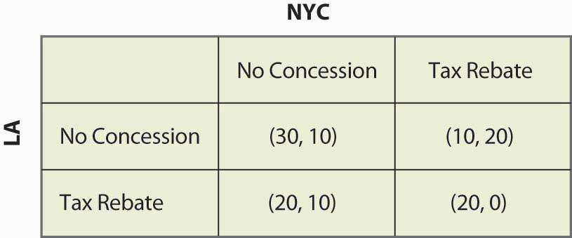
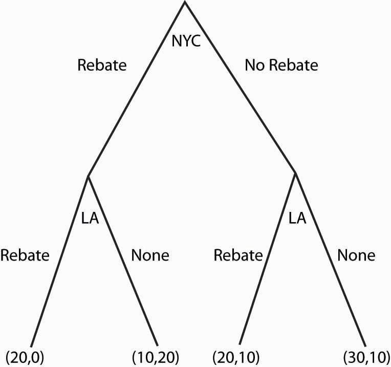
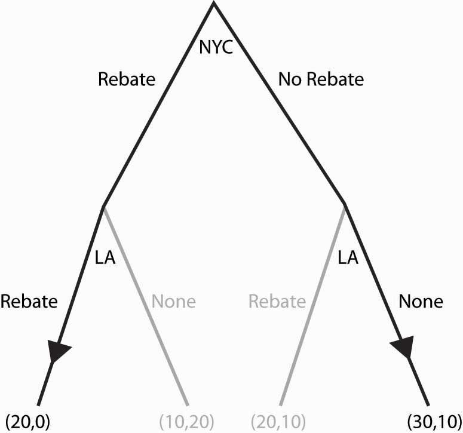
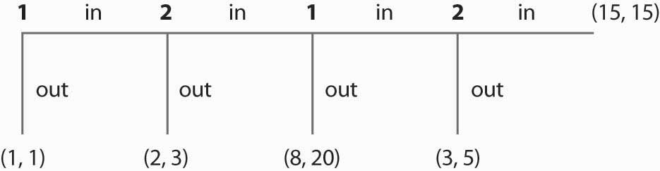
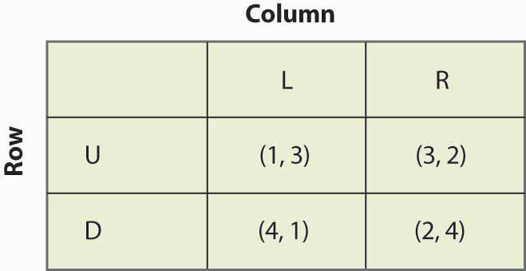

So far, we have considered only games that are played simultaneously. Several of these games—notably the price cutting and apartment cleaning games—are actually played over and over again. Other games, like the bank location game, may only be played once, but nevertheless are played over time. Recall the bank location game, as illustrated once again in Figure 16.27 "Bank location game revisited".
Figure 16.27 Bank location game revisited
If neither city offered a Rebate, then Los Angeles won the bidding. So suppose that, instead of the simultaneous move game, first New York City decided whether to offer a Rebate, and then Los Angeles could decide to offer a Rebate. This sequential structure leads to a game that looks like Figure 16.28 "Sequential bank location (NYC payoff listed first)".
In this game, NYC makes the first move and chooses Rebate (to the left) or No Rebate (to the right). If NYC chooses Rebate, LA can then choose Rebate or None. Similarly, if NYC chooses No Rebate, LA can choose Rebate or None. The payoffs [using the standard of (LA, NYC) ordering] are written below the choices.
Figure 16.28 Sequential bank location (NYC payoff listed first)
What NYC would like to do depends upon what NYC believes LA will do. What should NYC believe about LA? (Boy, does that rhetorical question suggest a lot of facetious answers.) The natural belief is that LA will do what is in LA’s best interest. This idea—that each stage of a dynamic game is played in an optimal way—is called subgame perfectionThe idea that every stage of a dynamic game is played in an optimal way..
Subgame perfection requires each player to act in its own best interest, independent of the history of the game.Subgame perfection was introduced by Nobel laureate Reinhard Selten (1930–). This seems very sensible and, in most contexts, it is sensible. In some settings, it may be implausible. Even if I see a player make a particular mistake three times in a row, subgame perfection requires that I must continue to believe that that player will not make the mistake again. Subgame perfection may be implausible in some circumstances, especially when it pays to be considered somewhat crazy.
In the example, subgame perfection requires LA to offer a Rebate when NYC does (since LA gets 20 by rebating vs. 10), and to not offer a Rebate when NYC doesn’t. This is illustrated in the game, as shown in Figure 16.29 "Subgame perfection", using arrows to indicate LA’s choices. In addition, the actions that LA won’t choose have been recolored in a light gray.
Once LA’s subgame perfection choices are taken into account, NYC is presented with the choice of offering a Rebate, in which case it gets 0, or not offering a Rebate, in which case it gets 10. Clearly the optimal choice for NYC is to offer No Rebate, in which case LA doesn’t either; and the result is 30 for LA, and 10 for NYC.
Dynamic games are generally “solved backward” in this way. That is, first establish what the last player does, then figure out—based upon the last player’s expected behavior—what the penultimate player does, and so on.
Figure 16.29 Subgame perfection
We’ll consider one more application of subgame perfection. Suppose, in the game “avoiding Rocky,” that Rocky is actually stalking you and can condition his choice on your choice. Then you might as well go to the party you like best, because Rocky is going to follow you wherever you go. This is represented in Figure 16.30 "Can’t avoid Rocky".
Figure 16.30 Can’t avoid Rocky

Since Rocky’s optimal choice eliminates your best outcomes, you make the best of a bad situation by choosing Party 1. Here, Rocky has a second mover advantageSituation in which choosing second is better than choosing simultaneously.: Rocky’s ability to condition on your choice means that by choosing second he does better than he would do in a simultaneous game. In contrast, a first mover advantageSituation in which choosing first is better than choosing simultaneously. is a situation where choosing first is better than choosing simultaneously. First mover advantages arise when going first influences the second mover advantageously.
What payoffs would players receive if they played this two-player sequential game below? Payoffs are listed in parentheses, with Player 1’s payoffs always listed first. (Note that choosing “in” allows the other player to make a decision, while choosing “out” ends the game.)
Figure 16.31
Consider the following game:
Figure 16.32
